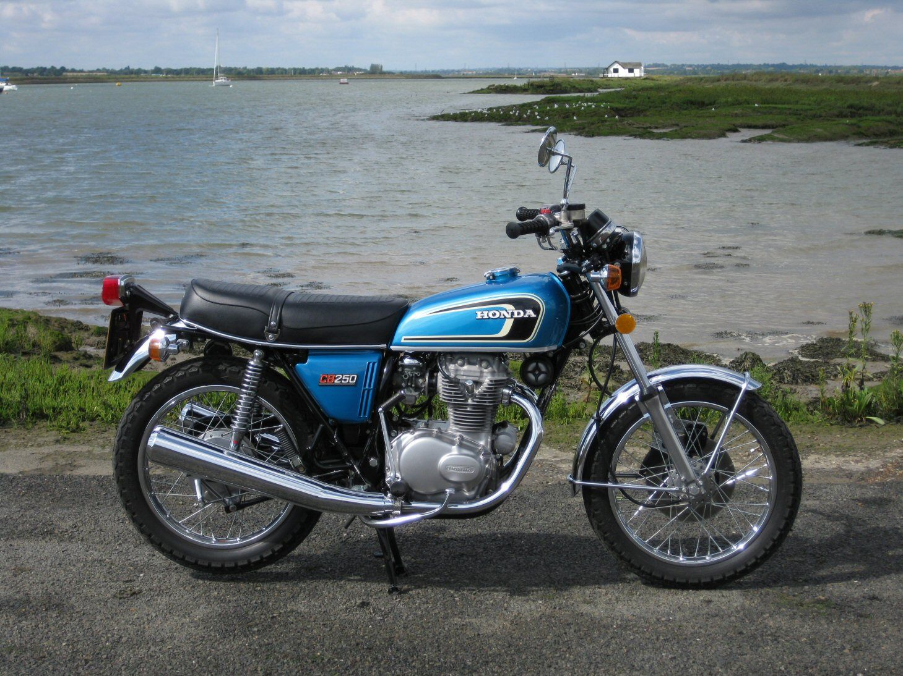
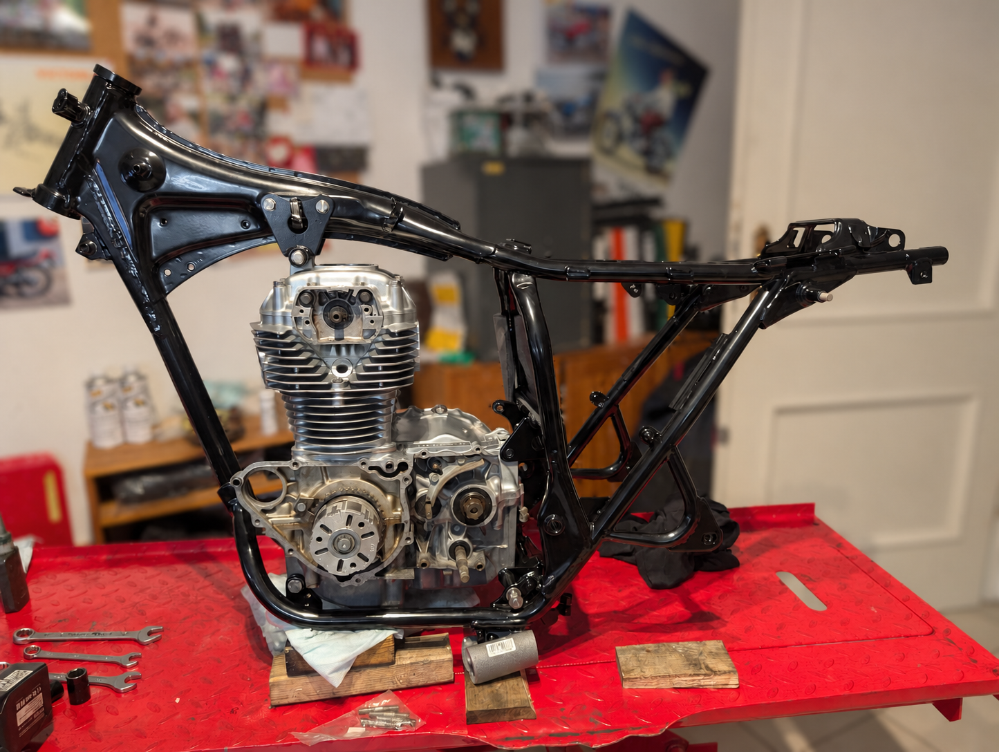
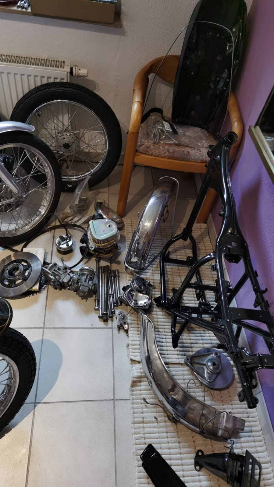
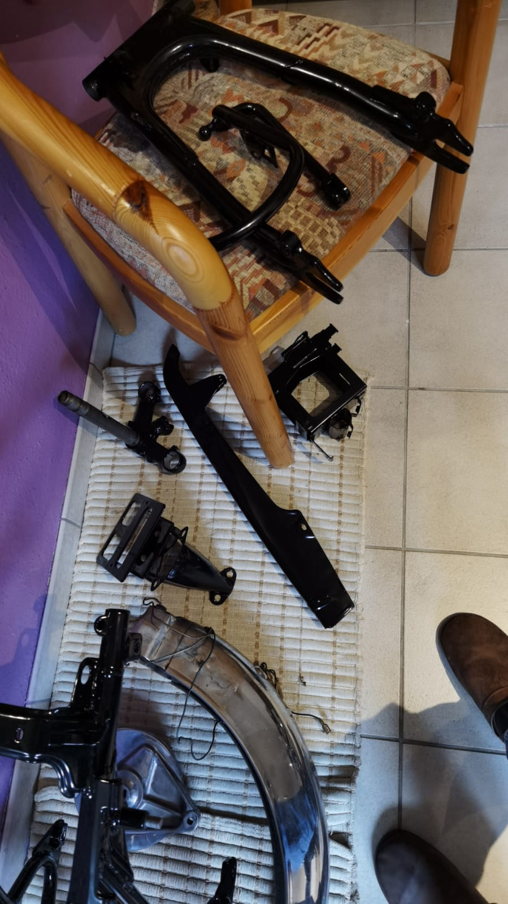
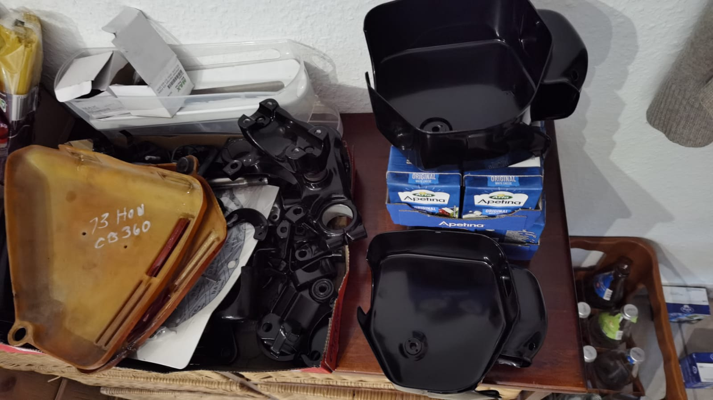
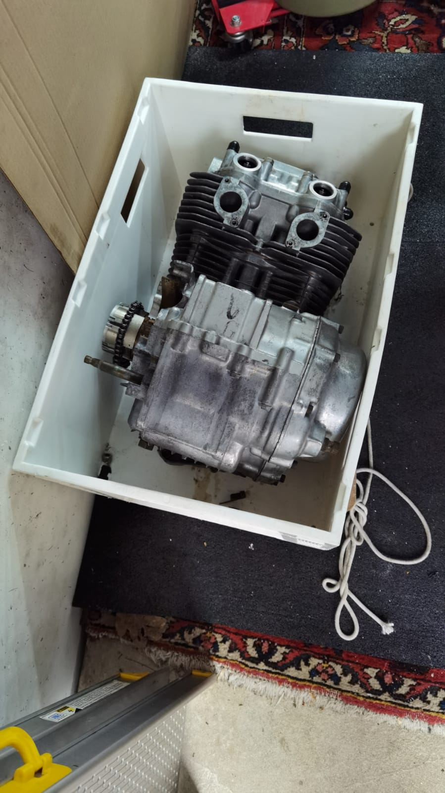
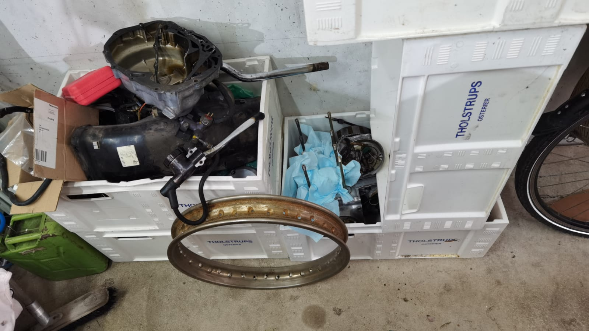
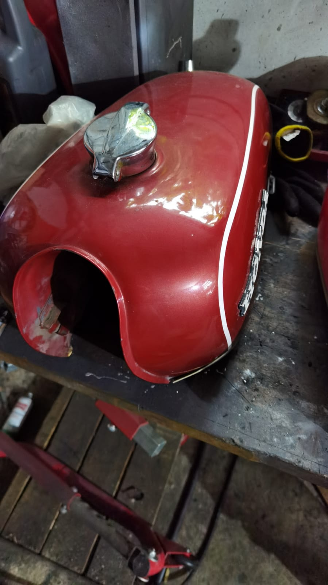

Projekt · Honda
CB250G · 1976
Die Restaurierung meiner Honda CB250G – vom Teilelager zurück auf die Straße, in Hawaiian Blue Metallic.
Bildergalerie
Stand des Projekts
Das erste Bild ist ein Farb- und Stilvorbild für das fertige Motorrad. Die weiteren Aufnahmen zeigen die vorhandenen Teile meiner Honda.







